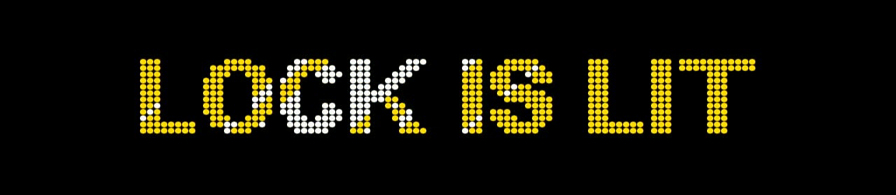
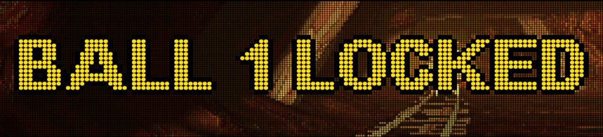
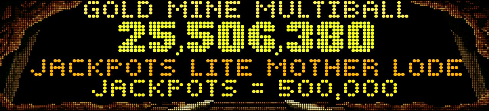
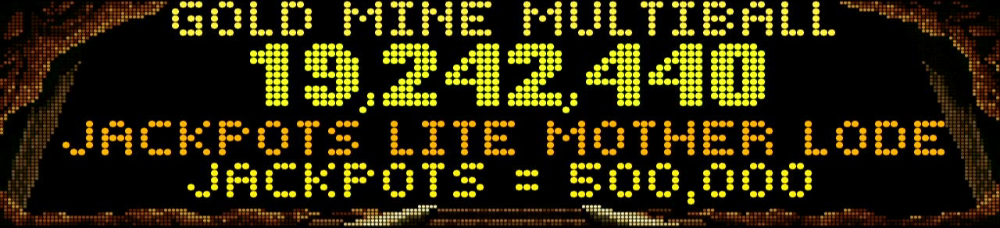
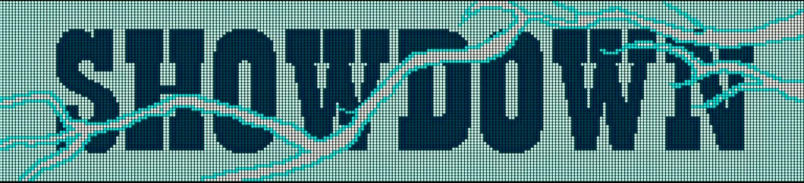
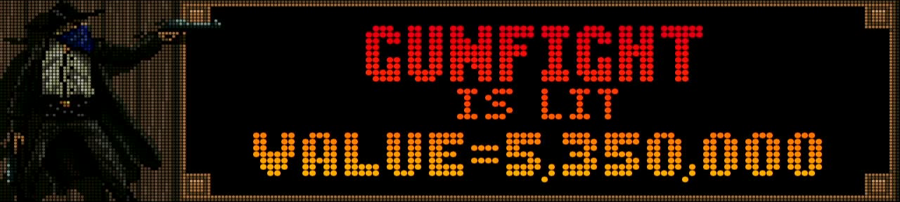
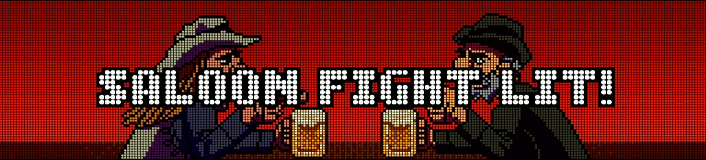
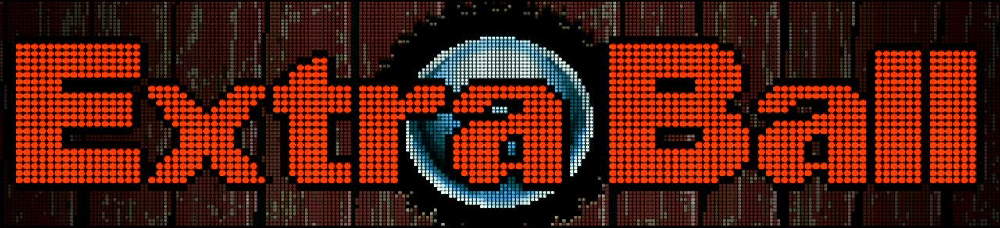

Light Lock 3

GOLD MINE MULTIBALL
Light and activate Lock 1, Lock 2, and Lock 3 in sequence (via Light Lock).
This starts the Gold Mine Multiball. This multiball leads to the Mother Lode status, which connects directly to High Noon.
⭐ Pro-Tip (The Joker): Shoot directly into the moving mine to automatically collect one unlit jackpot on the playfield!

Guaranteed Extra Ball: Completing the Train Mode chain (Left Ramp ➔ Right Ramp ➔ Center) guarantees a lit Extra Ball!
⭐ Mode Pro-Tips:
• Bank Robber: Hitting the Right Ramp enters the bank. To actually save Polly and finish the mode, you MUST clear all 4 drop targets (the robbers) within the bank scene!
• Marksman: 3 targets lit. Hit outer targets first! Hitting the Center immediately ends the mode.
• Left Orbit (Bronco): The gate usually drops the ball into the pops. It only opens for full loops during special events.
(No ball stop like Gunfights)
MULTIBALL


Unlike Gunfights, Quick Draws do not stop the ball via posts. Drop targets pop up during fluid gameplay and must be hit on the fly!
Showdown Multiball (5 Stages):
Starts as a 2-ball multiball. Clearing the first set of drops adds a 3rd ball!
The Cycle: In each stage, clear all active drop targets, then shoot an uncollected red-lit Jackpot.
The Finale (Stage 5): Clear the final targets, then shoot Boss Bart directly in the center to start Victory Laps!

Start: Left orbit immediately after ball launch. Theme: Old Man Ames is losing his goods.
⭐ Permanent Boost: Collecting a Hurry-Up has a permanent effect! Every successful collect increases the base value of ALL future Hurry-Ups AND the fixed 1-Million awards for the rest of the entire game.
Plunge Physics & Risk: Plunging blindly is dangerous! Very low-value "duds" (like 10k) are mixed into the cup rotation. Master your plunge strength to target the lucrative Hurry-Up or the Million-Boost!
COMPLETE UPGRADE

Defeat entire Gang (Stage 1),
Rescue Polly (Stage 2)
The final confrontation!
Stage 1: Defeat the entire gang.
Stage 2: Boss Bart Final Battle & rescue Polly. This finally brings peace to Cactus Canyon.

- How to Qualify:
- Defeat a Bart | Bounty Reward | Complete a Shot Mode
- Value Progression:
- Light Gunfight ➔ Shoot Bad Guy 1-4
- Builds Value
- Value Multiplier (1x, 2x...)
- Risk: Lost on Drain
- Collect: Reset after Completion
- (Disabled during active Shot Modes)
The Gunfight is a storable Mega-Jackpot.
Multiplier Math: Finishing a shot mode adds its value to the Gunfight. 1st mode = 1X, 2nd mode = 2X, building infinitely until you start the duel!
Qualify via Bart Defeat, Bounty, or Shot Mode Completion. Disabled during active Shot Modes.
There is an inlane display (toggleable left/right). The value is completely lost upon a ball drain!
Resets after completed Gunfight.
⭐ Instant Info (Status Report): Hold both flipper buttons during gameplay to check your exact Gunfight Multiplier (built up from stacked shot modes) before starting the duel!

Activation: Defeating Bionic Bart does not start the mode instantly! You must shoot the Saloon doors multiple times to symbolically "buy every guest a beer" before the party actually kicks off.
Once active, help Bartender Jesse serve his patrons! The goal is to fill beer mugs to activate the powerful Chug Bonus.
Make 10 Combo Shots to achieve Combo status. This leads directly to the High Noon Hub!

➔ Saloon
➔ Beer Mug
Lifelong friends Beau and Boone escalate their argument! Triggered by Spinner Count (200 Spins).
Switches massively increase the Jackpot value. Collect is only possible at the Beer Mug.
⭐ Double-Scoring Trick & Timer: Points are added to your score instantly while building the jackpot. Collecting at the Beer Mug pays those points a second time! Crucially, the mode's 20-second timer is completely paused as long as the physical spinner is actively spinning!
(Timed Frenzy)
(Inverted Flippers, Super Jackpot)

⭐ Mug hits eventually Light EXTRA BALL!

Beer Mugs serve as the central mode unlock mechanism.
Franks & Beans: Timed Switch Frenzy.
Drunken Multiball: Dooley the town drunk stumbles out! Inverted flippers, Beer Mug is the Super Jackpot!
Extra Ball: Alongside these modes, pure hits on the mug will also eventually light an Extra Ball.
⭐ Pro-Tip: Physically cross your arms at the buttons during Drunken Multiball to trick your brain!

Waves of Bad Guys appear!
Do NOT shoot Women & Cows
If a physical Topper is missing, this starts as a Video Mode on the main display.
Gameplay Controls: Use the left and right flipper buttons to steer.
Strict Rules: You must never shoot the bystanders (women or cows). Wait patiently until the Bad Guy gives you a clear line of sight, and time your shot perfectly!

Available only 1x per game. Activated by a left outlane drain.
Wyatt appears behind one of 4 drops. There are 3x deadly TNT and 1x safe target. Hit the correct drop first -> Save the ball!
Important: This only saves your ball (protecting your stored value from draining). It does not collect the Gunfight Mega-Jackpot!
Chicago Gaming reproduces this pinball programmed by Sam Zehr and the legend Lyman Sheats.
Wyatt 4 drops, correct drop (green safe) saves ball. 3 TNT = end ball.

➔ Save the Train
➔ Marshall Multiball
Every successfully completed Gunfight (Duel) ranks you up exactly one level!
Deputy unlocks the Gunfight Ball Save.
Marshall unlocks the Mini-Wizard Mode.
Mini Wizard Mode:
Phase 1: Train Rescue (5 Jackpots to stop Boss Bart).
Phase 2 (Marshall Multiball): Bad Guys escape! Capture them using the countdown system.
⭐ Pro-Tip (Countdown Multiplier): In Phase 2, all 5 shots start at 1x. Hit shots turn off, and the remaining shots steadily increase in multiplier (2x, 3x, 4x) until the very last shot awards the massive 10x Marshall Jackpot!
Cactus Canyon - Extended Rule Details
Mother Lode (Gold Mine)
Light and activate Lock 1, Lock 2, and Lock 3 in sequence (via Light Lock).
This starts the Gold Mine Multiball. This multiball leads to the Mother Lode status, which connects directly to High Noon.
⭐ Pro-Tip (The Joker): Shoot directly into the moving mine to automatically collect one unlit jackpot on the playfield!
Stampede (Shot Modes)
Complete these five mode chains. Once you reach all five end states (e.g., Save Polly or Marksman), Stampede is unlocked, leading to the High Noon Wizard Mode.
Extra Ball (Train Mode): Successfully completing the Train Mode chain (by shooting Left Ramp ➔ Right Ramp ➔ Center) guarantees lighting an Extra Ball!
⭐ Specific Mode Mechanics & Pro-Tips:
- Bank Robber: You have a strict time limit. Hitting the Right Ramp enters the bank, but to actually save Polly and finish the mode, you MUST clear all 4 drop targets (representing the robbers) within the bank scene!
- Marksman: Three targets are lit. Pro-Tip: Always hit the two outer targets first! Hitting the center target immediately ends the mode, costing you the points from the outer targets.
- Left Orbit Gate (Buckin' Bronco): During these modes, the gate in the left orbit usually intercepts the ball and drops it into the pop bumpers. The gate only opens for a full orbit during specific events.
Showdown (Quick Draws & Multiball)
Trigger Light Quick Draw four times to shoot Bad Guys 1 to 4. This leads to the Showdown.
Quick Draw vs. Gunfight: Unlike Gunfights, Quick Draws do not stop the ball in the inlanes. Drop targets pop up during fluid gameplay and must be hit on the fly.
Showdown Multiball (5 Stages):
Starts as a 2-ball multiball. Clearing the first set of drop targets adds a 3rd ball into play!
The Cycle: In each of the 5 stages, you must first clear all active drop targets, and then shoot one uncollected, red-lit main jackpot.
The Finale: In the 5th and final stage, after clearing the last drop targets, hit Boss Bart centrally to defeat him and start Victory Laps!
Super Skill Shot & Plunge Physics
Start: Left orbit immediately after ball launch. Theme: Old Man Ames is losing his goods.
⭐ Permanent Boost: Collecting a Hurry-Up has a permanent effect! Every successful collect increases the base value of ALL future Hurry-Ups AND the fixed 1-Million awards for the rest of the entire game.
Risk & Timing: Very low-value "duds" (like 10k or 50k) are mixed into the cup rotation. Plunging blindly is risky—proper timing is essential to avoid these traps and secure the big rewards!
Funnel Control (Plunge Physics): The strength of your plunge exactly determines how many times the ball spins in the funnel. By practicing a "Short Plunge" versus a "Full Plunge," you can perfect your timing to precisely target your preferred reward!
High Noon (Ultimate Wizard Mode)
The final confrontation!
Stage 1: Defeat the entire gang.
Stage 2: Boss Bart Final Battle & rescue Polly. This finally brings peace to Cactus Canyon.
Gunfight System
The Gunfight is a storable Mega-Jackpot.
Multiplier Math: Finishing a shot mode adds its value to the Gunfight. 1st mode = 1X, 2nd mode = 2X, building infinitely until you start the duel!
There is an inlane display (toggleable left/right). The value is completely lost upon a ball drain!
Resets after completed Gunfight.
⭐ Instant Info (Status Report): By holding both flipper buttons during gameplay, you can open the Status Report on the display. This allows you to check your exact Gunfight Multiplier (e.g., 2x, 3x, 4x...) built up from stacked shot modes before deciding to start the duel!
5 Bart Brothers & Saloon Party
Defeat all five Barts: Big Bart, Bandolero Bart, Bubba Bart, the new sister Bella Bart, and finally Bionic Bart.
New Order & Escalating Difficulty: Bella Bart is mixed into the standard rotation. This means you must defeat one additional Bart before facing the final Bionic Bart. Additionally, each subsequent Bart on your journey requires progressively more hits on the Saloon doors to be defeated!
⭐ Pro-Tip (No Reset): If you drain during the multi-stage Bionic Bart battle, your progress is saved for the next ball!
Saloon Doors Mechanics: Physical doors remain closed during normal Bart fights, blocking the scoop to increase danger. They only open for the final Kill Shot, Bounties, or Mode Starts.
Saloon Party Activation: Defeating Bionic Bart does not start the party instantly! Afterwards, you must shoot the Saloon doors several times to symbolically "buy every guest a beer." Only then does the Saloon Party actually kick off. Help Bartender Jesse serve his patrons! The goal is to fill beer mugs to activate the powerful Chug Bonus.
Combo
Make 10 Combo Shots to achieve Combo status. This leads directly to the High Noon Hub!
Spinner & Saloon Fight
Lifelong friends Beau and Boone escalate their argument! Triggered by Spinner Count (200 Spins).
Switches massively increase the Jackpot value. Collect is only possible at the Beer Mug.
⭐ Pro-Tip (Double-Scoring & Timer Pause): This is a massive strategic advantage! Spinner points are added to your score immediately during the mode and they build the jackpot simultaneously. When you collect at the Beer Mug, you receive those points a second time! Crucially, the mode's 20-second timer is completely paused as long as the physical spinner is actively spinning.
Beer Mug System
Beer Mugs serve as the central mode unlock mechanism.
Franks & Beans: Timed Switch Frenzy.
Drunken Multiball: Dooley the town drunk stumbles out! Inverted flippers, Beer Mug is the Super Jackpot!
⭐ Pro-Tip: Physically cross your arms at the buttons during Drunken Multiball to trick your brain!
Extra Ball: Alongside unlocking modes, accumulating pure hits on the Beer Mug will also eventually light an Extra Ball.
Shootout Topper Mode / Video Mode
Alternative: If a physical Topper is not installed on the machine, this mode automatically plays as a pure Video Mode on the main LCD display!
Gameplay Controls: Use your flipper buttons to steer left and right across the screen.
Strict Rules: Waves of enemies appear. The clear goal is to shoot the Bad Guys, but you must never, under any circumstances, shoot the bystanders (women or cows). Wait patiently until the Bad Guy gives you a clear line of sight, and time your shot perfectly to avoid penalties!
⭐ Pro-Tip (Secret LEDs): The black bottom edge of the physical Topper features hidden LEDs that actively display your remaining ammo during this mode!
Gunfight Ball Save
Available only 1x per game. Activated by a left outlane drain.
Wyatt appears behind one of 4 drops. There are 3x deadly TNT and 1x safe target. Hit the correct drop first -> Save the ball!
Important: This event does not collect your accumulated Gunfight Jackpot. It solely rescues your ball, which effectively protects your stored jackpot value from being lost to a drain.
Rank System (Meta Progression)
A strong meta-progression across ranks.
Core Mechanic: Every successfully completed Gunfight (Duel) ranks you up exactly one level (Stranger ➔ Partner ➔ Deputy ➔ Sheriff ➔ Marshall).
Deputy unlocks the Gunfight Ball Save.
Marshall unlocks the Mini-Wizard Mode.
Mini Wizard Mode:
Phase 1: Train Rescue (Boss Bart attacks train, 5 Jackpots to stop him).
Phase 2: Marshall Multiball (Bad Guys escape, capture them all again using the countdown system).
⭐ Pro-Tip (Precision Shot & Countdown): In Phase 1, shooting jackpots perfectly through the gaps without hitting the pop-up targets awards massive extra points! In Phase 2, all 5 shots start at 1x. Hit shots turn off, and the remaining shots steadily increase in multiplier (2x, 3x, 4x) until the very last shot awards the massive 10x Marshall Jackpot!